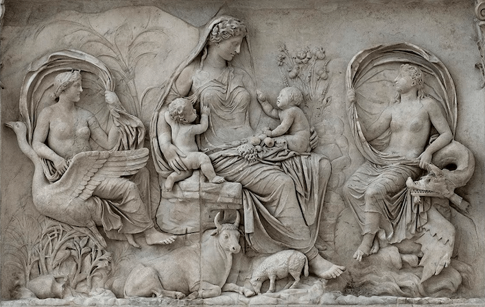

Sobre Tierra
Nuestro hogar, el planeta Tierra formado hace 4.600 millones de años como el resto del Sistema Solar, es un plante terrestre y rocoso. Tiene una superficie sólida y activa, con valles, cañones, llanuras y mucho más. Nuestra atmosfera está compuesta,en gran parte por nitrógeno y tambien por mucho oxígeno

Esta es una foto de la Tierra mirando exactamente hacia la parte norte
Caracteristicas
Distancia desde el Sol
149,6 millones de km
Diámetro:
12.756km
Translación
365,25 días
Temperatura media:
-15ºC
Satélites:
-La Luna
Inclinación axial:
-23,4º
Radio
-6380km
Atmosfera
-78º nitrogeno 21% oxígeno y 1% gases nobles
 Foto tomada por Apolo 11 en 1969
Foto tomada por Apolo 11 en 1969
Nuestro satelite: La Luna
Es el unico satélite natural de la Tierra. Con un diametro ecautorial de 3476 km, es el quinto satélite más grande del sistema solar. No posee atmósfera y su superfice se encuentra marcada por crateres.
Datos:Distancia desde la Tierra
378.000km
Diámetro:
3475km
Translación
7,5 horas
Temperatura:
-20ºC
Curiosidades:
Los "Picos de Luz Eterna" son unas monntañas en la Luna, al borde del cráter Peary, cerca del Polo Norte. El origen de la Luna debió ser una colisión oblícua de un objeto del tamaño de Marte contra la "proto-Tierra" cuando estaba en estado de formación(semiliquída) hace unos 4.600 millones de años.
En la mitología romana "Luna" era la diosa de la luna, equivalente a Selene en la mitología griega, asociada con la luz, la femidad y los ciclos naturales.
Historia
En la mitologia griega, Gea(o Gaia) era la diosa primordial que representaba la Tierra, la madre de los dioses y los titanes. Los romanos al adoptar la mitologia griega, la llamaron Terra
 Imagen de la diosa